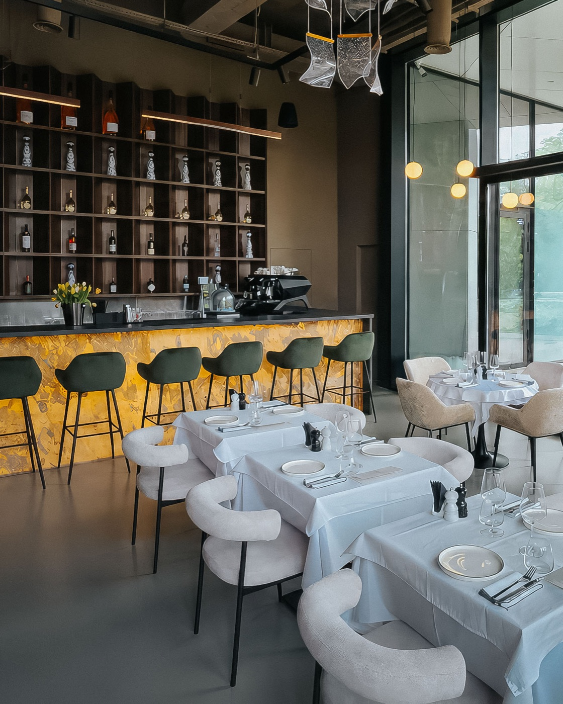
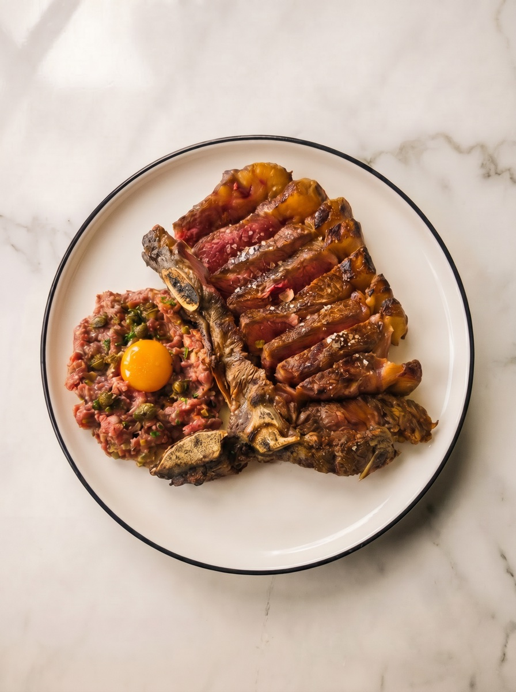
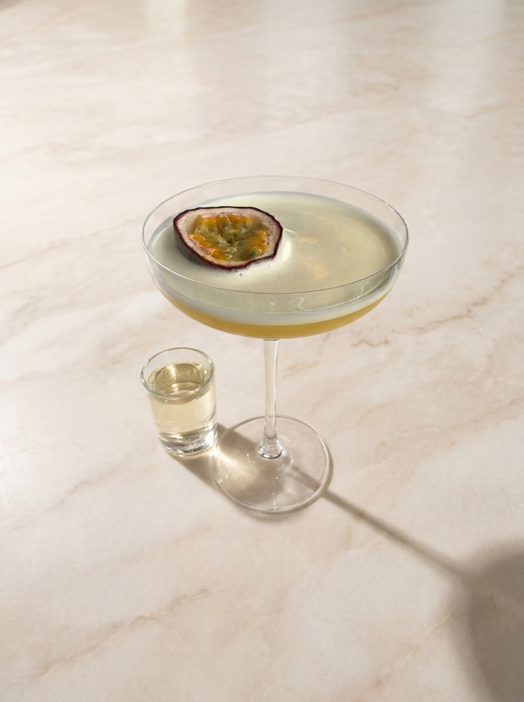
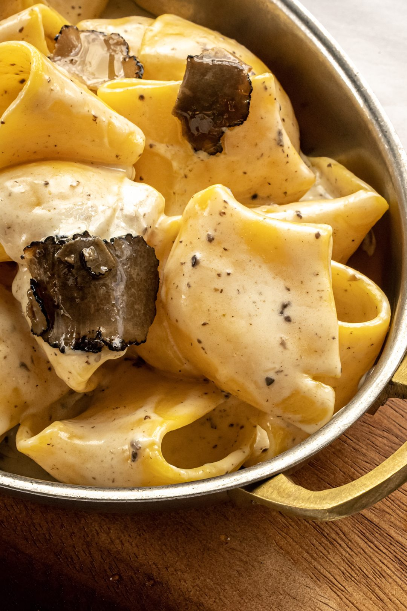
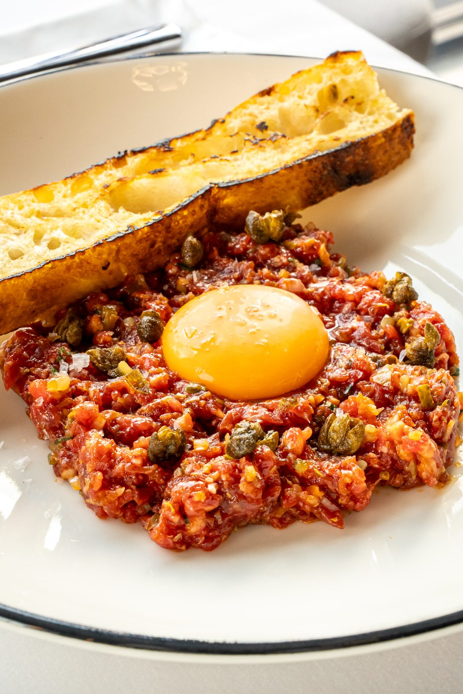
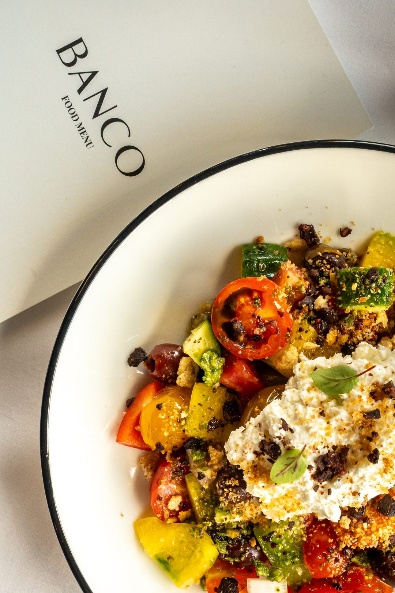
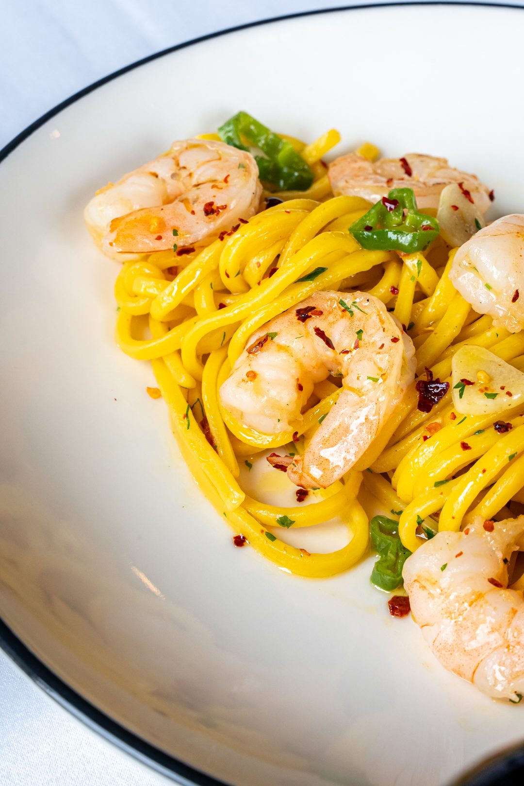
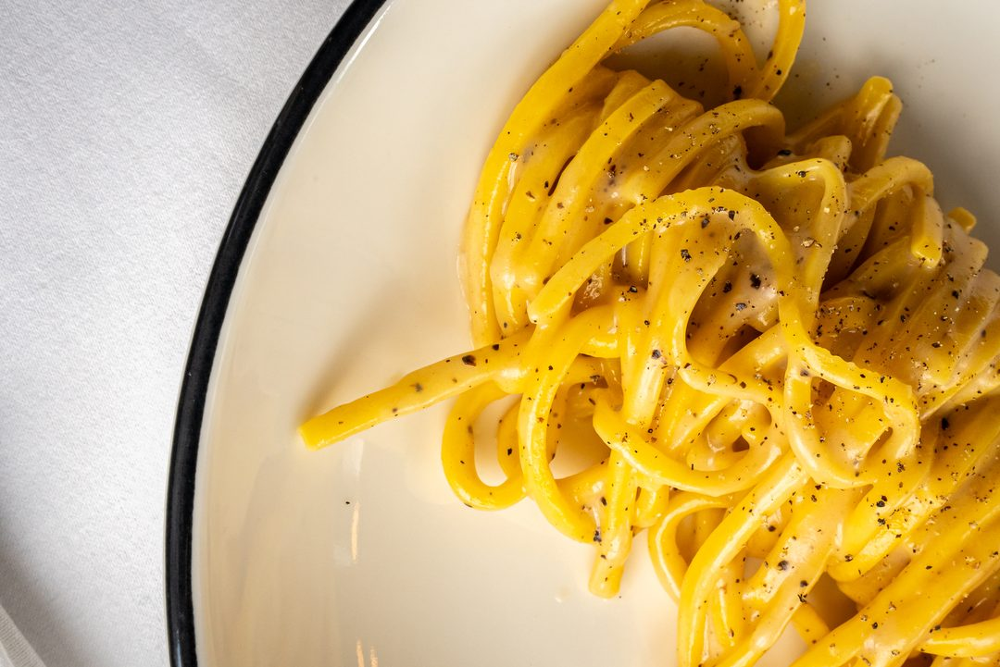
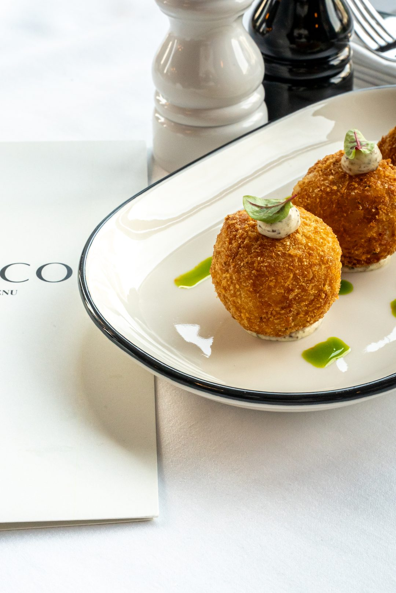
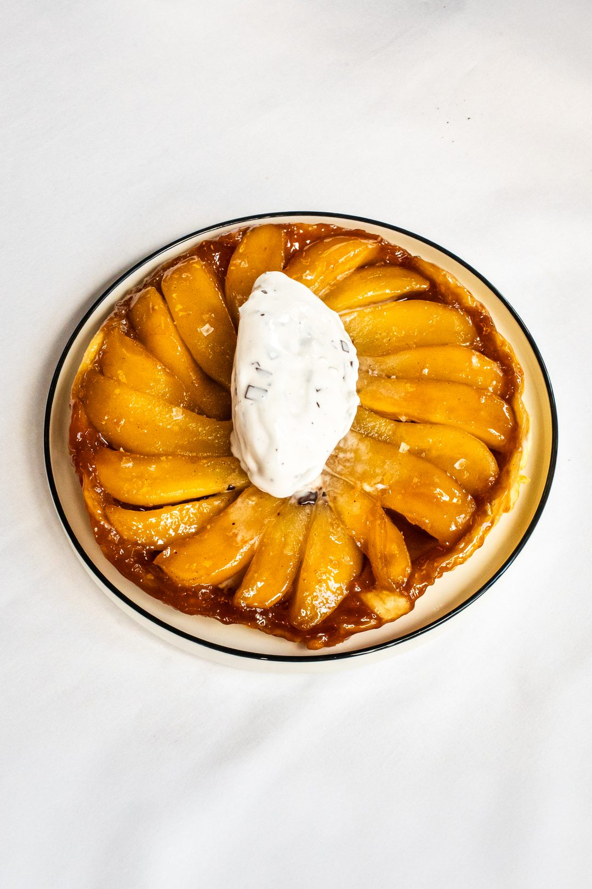

Bucătărie mediteraneană reinterpretată și cocktailuri de autor, în One Verdi Park.
Preferi să vorbești cu noi? Sună la +40 773 261 721 sau scrie-ne la contact@banco-restaurant.ro.
Alege data, ora și numărul de persoane. Rezervarea ajunge direct la noi.
Zilnic, 10:00 — 22:00
One Verdi Park, Barbu Văcărescu 164E
Mediteraneană & europeană contemporană
Online sau la +40 773 261 721
BANCO este un restaurant mediteranean premium casual, construit în jurul clasicelor reinterpretate și al băuturilor de autor — gândit pentru mese lungi și seri sociale.

Influențe milaneze contemporane, materiale calde și o atmosferă relaxată — la fel de potrivită pentru o întâlnire de business ca pentru o cină cu prietenii.

Clasice mediteraneene reinterpretate: paste făcute în casă, pește la grătar, burrata, tartar de vită și preparate de împărțit.

Interpretări proprii ale cocktailurilor clasice, o carte de vinuri europene și șampanie la pahar — de la ora aperitivo-ului până seara târziu.

Paccheri al Tartufo
Tartar de Vită
Legume & Burrata
Gamberi
Cacio e Pepe
Arancini
Tarte TatinRezervă în câțiva pași, cu până la 30 de zile în avans. Pentru grupuri de 8 persoane sau mai mari, sună-ne și organizăm împreună.
Rezervă o masă Sau sună la +40 773 261 721Strada Barbu Văcărescu 164E, Corp A, Parter · Sector 2, 020285
Deschide în Google Maps →